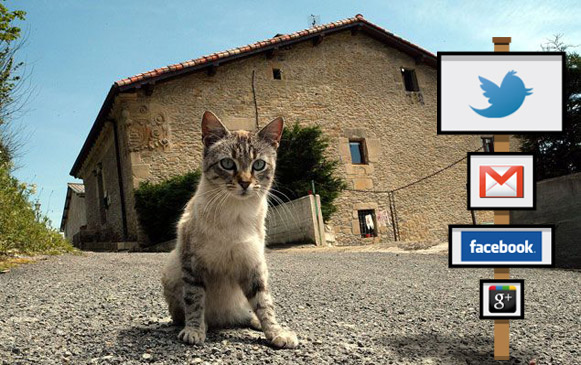

:: Sitio web de Roberto Gutiérrez durante mi etapa como diseñador gráfico en Kale Dor Kayiko
:: Inicio /
Mi trabajo en Kale Dor Kayiko:

Fotografía: Eduardo Argote. (El Correo.com / Ciencia)
Contacta conmigo:
O escríbeme a mi cuenta de e-mail:
:: elpayoquedibuja [arroba]gmail.com
O en twitter: